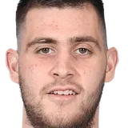
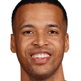
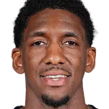

Played 2 seasons for 2 teams; his teams went 10–29 in his games.
Jump to: Record by opponent · Season by season · Teammate help
Compare Georgios Papagiannis with…
Final NBA finish, season by season
Title Finals Other playoffs Missed playoffs. #1 = champion; the dashed line is last place that season. Each point opens that season's final standings.
All 30 teams ranked in 2016-17, his best finish (#23)Teammate help
 DeMarcus Cousins1.01 season
DeMarcus Cousins1.01 season Buddy Hield0.21 season
Buddy Hield0.21 season Bogdan Bogdanovic0.11 season
Bogdan Bogdanovic0.11 season
Career
Career records (W–L, W − L, with and without) include 2026-27 games through Nov. 21, 2026; season counts and finishes are through 2025-26. Each card opens its board in the same scope. How we count.

With and without his teammates
His 12 teammates with the most regular-season games together. "Together" is the team's record in the games both played for it; "Without him" is the team's record in the games Georgios Papagiannis played for that team while the teammate was on it (between the teammate's first and last game for the team, the appearance span) and the teammate did not play. Fewer than 20 games without him: no gap. Games through Nov. 21, 2026. How we count.
 Willie Cauley-Stein
Willie Cauley-Stein Sacramento 2016-17 to 2017-18
Sacramento 2016-17 to 2017-18- Together
- 8–28 22.2%
- Without him
- 2–0 100.0%
- Gap
- Too few games without him
- Buddy HieldSacramento 2016-17 to 2017-18
- Together
- 9–25 26.5%
- Without him
- N/A N/A
- Gap
- Too few games without him

Skal LabissiereSacramento 2016-17 to 2017-18- Together
- 8–25 24.2%
- Without him
- 2–3 40.0%
- Gap
- Too few games without him
 Garrett TempleSacramento 2016-17 to 2017-18
Garrett TempleSacramento 2016-17 to 2017-18- Together
- 8–19 29.6%
- Without him
- 2–8 20.0%
- Gap
- Too few games without him
 Kosta KoufosSacramento 2016-17 to 2017-18
Kosta KoufosSacramento 2016-17 to 2017-18- Together
- 4–21 16.0%
- Without him
- 3–2 60.0%
- Gap
- Too few games without him
 Ben McLemoreSacramento 2016-17
Ben McLemoreSacramento 2016-17- Together
- 6–12 33.3%
- Without him
- 1–3 25.0%
- Gap
- Too few games without him

Langston GallowaySacramento 2016-17- Together
- 6–11 35.3%
- Without him
- 0–1 0.0%
- Gap
- Too few games without him
- Anthony TolliverSacramento 2016-17
- Together
- 5–11 31.2%
- Without him
- 2–3 40.0%
- Gap
- Too few games without him
- Bogdan BogdanovicSacramento 2017-18
- Together
- 3–13 18.8%
- Without him
- N/A N/A
- Gap
- Too few games without him
 Darren CollisonSacramento 2016-17
Darren CollisonSacramento 2016-17- Together
- 4–11 26.7%
- Without him
- 2–1 66.7%
- Gap
- Too few games without him
 Justin JacksonSacramento 2017-18
Justin JacksonSacramento 2017-18- Together
- 2–13 13.3%
- Without him
- 1–0 100.0%
- Gap
- Too few games without him
 Ty LawsonSacramento 2016-17
Ty LawsonSacramento 2016-17- Together
- 4–10 28.6%
- Without him
- 3–4 42.9%
- Gap
- Too few games without him
Latest completed seasons
- 2017-18·Sacramento·#24 of 3027–55 · Missed playoffs
- 2016-17·Sacramento·#23 of 3032–50 · Missed playoffs
Season by season
Newest first; every header sorts. Final NBA finish is the team's rank among all teams that season (#1 = champion) and opens that season's standings. "Without him" uses the team-season window; the span line counts only the games between his first and last game for the team.
| 2017-18 | #24 of 30 | 27–55 32.9% | Missed playoffs | 16 of 82 | 3–13 18.8% | 22–41 34.9%span: 12–18, gap −21.3 | −16.2 | |
| 2017-18 | #9 of 30 | 49–33 59.8% | Lost 1st round 0–4 | 1 of 82 | 0–1 0.0% | 20–9 69.0%span: N/A, gap N/A | −69.0 | |
| 2016-17 | #23 of 30 | 32–50 39.0% | Missed playoffs | 22 of 82 | 7–15 31.8% | 25–35 41.7%span: 23–31, gap −10.8 | −9.8 |
On/off, starts and close games
From the lineup data, 1996-97 on. On/off is net points per 100 possessions with him on the floor minus off, a different unit from the win-rate gaps. Started and off the bench are team records in those games; close games are those within 5 points in the last 5 minutes with him on the floor.
| 2017-18 | +6.7 | 3–13 18.8% | N/A | |
| 2017-18 | +207.0 | 0–1 0.0% | 0–1 0.0% | |
| 2016-17 | +5.6 | 7–15 31.8% | 2–1 66.7% |
Teammate help by season
Two separate numbers per season, each with every teammate that adds to it. Help this season = Teammates Score points for honors won that season by teammates who shared a game with him. Help coming in = the same teammates' honors from the season before. How help works.
- 2017-18Sacramento
Bogdan Bogdanovic All-Rookie 2nd0.12516 g
Help this season: 0.125 = 0.125 Bogdan Bogdanovic
More: help coming in and other teammates
Help coming in (teammates' honors the season before): 0.25 = 0.25 Buddy Hield
Other teammates (no honors that season): Buddy Hield 16 g, Justin Jackson 15 g, Kosta Koufos 14 g, Willie Cauley-Stein 14 g, Garrett Temple 13 g, George Hill 13 g, De'Aaron Fox 13 g, Zach Randolph 11 g, Skal Labissiere 11 g, Vince Carter 9 g, Malachi Richardson 8 g, Frank Mason 7 g, JaKarr Sampson 3 g
- 2017-18
 PortlandHelp this season: 0, no honored teammate
PortlandHelp this season: 0, no honored teammate - 2016-17Sacramento
DeMarcus Cousins All-Star13 gBuddy Hield All-Rookie 1st0.2518 g
Help this season: 1.25 = 1 DeMarcus Cousins + 0.25 Buddy Hield
More: help coming in and other teammates
Help coming in (teammates' honors the season before): 4.125 = 4 DeMarcus Cousins + 0.125 Willie Cauley-Stein
Other teammates (no honors that season): Skal Labissiere 22 g, Willie Cauley-Stein 22 g, Ben McLemore 18 g, Langston Galloway 17 g, Anthony Tolliver 16 g, Darren Collison 15 g, Garrett Temple 14 g, Ty Lawson 14 g, Kosta Koufos 11 g, Tyreke Evans 10 g, Arron Afflalo 10 g, Matt Barnes 4 g, Malachi Richardson 4 g, Omri Casspi 2 g and 1 more
Record against each opponent
Regular season, through 2025-26 (2026-27 games not included): 39 games, 10–29, against 21 franchises.
Grouped by franchise (named as today); game lists keep each team's name that season. Filters and the tab are kept in the URL, so a filtered view can be shared.
| Games list | |||||||
|---|---|---|---|---|---|---|---|
| 3 | 0–3 | 0.0% | −3 | N/A | 2016-17 to 2017-18 | ||
| 3 | 0–3 | 0.0% | −3 | N/A | 2016-17 to 2017-18 | ||
| 3 | 1–2 | 33.3% | −1 | N/A | 2016-17 to 2017-18 | ||
| 3 | 0–3 | 0.0% | −3 | N/A | 2016-17 to 2017-18 | ||
| 3 | 2–1 | 66.7% | +1 | N/A | 2016-17 to 2017-18 | ||
| 2 | 0–2 | 0.0% | −2 | N/A | 2016-17 to 2017-18 | ||
| 2 | 0–2 | 0.0% | −2 | N/A | 2016-17 | ||
| 2 | 1–1 | 50.0% | 0 | N/A | 2016-17 | ||
| 2 | 0–2 | 0.0% | −2 | N/A | 2016-17 to 2017-18 | ||
| 2 | 2–0 | 100.0% | +2 | N/A | 2016-17 to 2017-18 | ||
| 2 | 2–0 | 100.0% | +2 | N/A | 2016-17 | ||
| 2 | 0–2 | 0.0% | −2 | N/A | 2016-17 to 2017-18 | ||
| 2 | 0–2 | 0.0% | −2 | N/A | 2017-18 | ||
| 1 | 0–1 | 0.0% | −1 | N/A | 2017-18 | ||
| 1 | 1–0 | 100.0% | +1 | N/A | 2016-17 | ||
| 1 | 1–0 | 100.0% | +1 | N/A | 2016-17 | ||
| 1 | 0–1 | 0.0% | −1 | N/A | 2016-17 | ||
| 1 | 0–1 | 0.0% | −1 | N/A | 2017-18 | ||
| 1 | 0–1 | 0.0% | −1 | N/A | 2016-17 | ||
| 1 | 0–1 | 0.0% | −1 | N/A | 2016-17 | ||
| 1 | 0–1 | 0.0% | −1 | N/A | 2017-18 |
Rows add up to his career record in his games. A playoff series counts when he played in it; early round-robin games show as games only. How we count.
Arrival and departure
Team wins per 82 games the season before he arrived vs his first season there, and his last season vs the season after he left. He leaves a team only when his next season with games is for another team (or he never plays again); whole seasons he missed and came back from are one "Missed" row with the team's record without him. Per 82 so short seasons compare fairly. These are team records, not a measure of what he did.
| Left | after 2017-18 | 2017-18: 27–55 27.0 per 82 | 2018-19: 39–43 39.0 per 82 without him | +12.0 wins | |
| Left | after 2017-18 | 2017-18: 49–33 49.0 per 82 | 2018-19: 53–29 53.0 per 82 without him | +4.0 wins | |
| Arrived | 2017-18 | 2016-17: 41–41 41.0 per 82 | 2017-18: 49–33 49.0 per 82 | +8.0 wins | |
| Debut | 2016-17 | 2015-16: 33–49 33.0 per 82 | 2016-17: 32–50 32.0 per 82 | −1.0 wins |
Seasons split between teams
Each team's record before his first game for it, inside his window (games with and without him) and after his last game, in the seasons he played for two or more teams.
| 2017-18 | Oct. 29, 2017 to Feb. 2, 2018 | N/A | 25–54 31.6% | 2–1 66.7% | 16 | |
| 2017-18 | April 5, 2018 to April 5, 2018 | 29–23 55.8% | 20–10 66.7% | N/A | 1 |